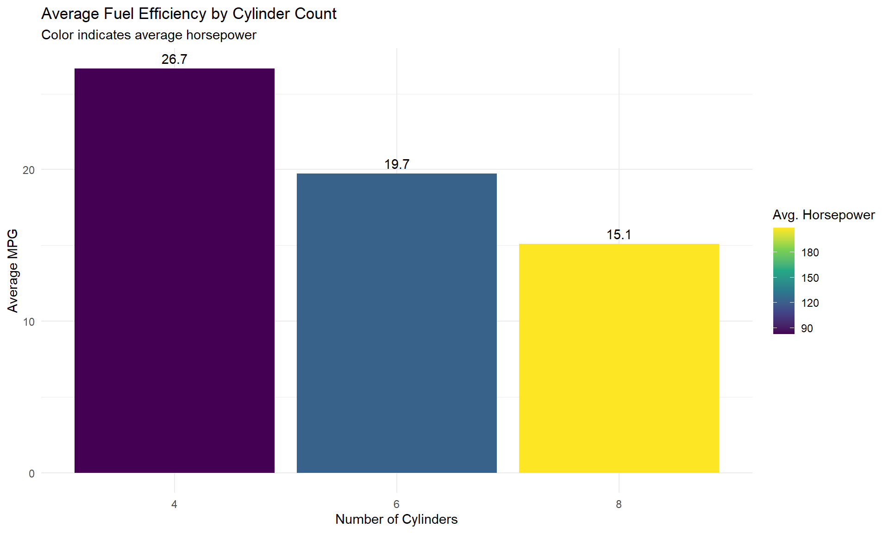
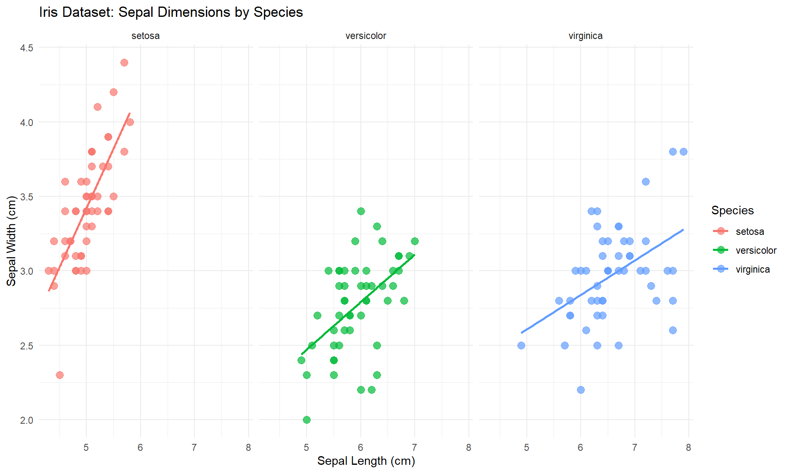

library(dplyr)
library(ggplot2)
library(knitr)Data Wrangling with dplyr
R
Data Manipulation
dplyr
The dplyr package is part of the tidyverse and provides a grammar for data manipulation in R. This post demonstrates essential data wrangling techniques using built-in datasets.
Setup
First, load the necessary packages:
Working with the mtcars Dataset
The built-in mtcars dataset is used for examples:
# Look at the mtcars data
glimpse(mtcars)Rows: 32
Columns: 11
$ mpg <dbl> 21.0, 21.0, 22.8, 21.4, 18.7, 18.1, 14.3, 24.4, 22.8, 19.2, 17.8,…
$ cyl <dbl> 6, 6, 4, 6, 8, 6, 8, 4, 4, 6, 6, 8, 8, 8, 8, 8, 8, 4, 4, 4, 4, 8,…
$ disp <dbl> 160.0, 160.0, 108.0, 258.0, 360.0, 225.0, 360.0, 146.7, 140.8, 16…
$ hp <dbl> 110, 110, 93, 110, 175, 105, 245, 62, 95, 123, 123, 180, 180, 180…
$ drat <dbl> 3.90, 3.90, 3.85, 3.08, 3.15, 2.76, 3.21, 3.69, 3.92, 3.92, 3.92,…
$ wt <dbl> 2.620, 2.875, 2.320, 3.215, 3.440, 3.460, 3.570, 3.190, 3.150, 3.…
$ qsec <dbl> 16.46, 17.02, 18.61, 19.44, 17.02, 20.22, 15.84, 20.00, 22.90, 18…
$ vs <dbl> 0, 0, 1, 1, 0, 1, 0, 1, 1, 1, 1, 0, 0, 0, 0, 0, 0, 1, 1, 1, 1, 0,…
$ am <dbl> 1, 1, 1, 0, 0, 0, 0, 0, 0, 0, 0, 0, 0, 0, 0, 0, 0, 1, 1, 1, 0, 0,…
$ gear <dbl> 4, 4, 4, 3, 3, 3, 3, 4, 4, 4, 4, 3, 3, 3, 3, 3, 3, 4, 4, 4, 3, 3,…
$ carb <dbl> 4, 4, 1, 1, 2, 1, 4, 2, 2, 4, 4, 3, 3, 3, 4, 4, 4, 1, 2, 1, 1, 2,…Basic dplyr Functions
Filtering Rows
# Find all cars with 6 cylinders
six_cyl <- mtcars %>%
filter(cyl == 6)
# Show the first few rows
head(six_cyl) %>%
kable()| mpg | cyl | disp | hp | drat | wt | qsec | vs | am | gear | carb | |
|---|---|---|---|---|---|---|---|---|---|---|---|
| Mazda RX4 | 21.0 | 6 | 160.0 | 110 | 3.90 | 2.620 | 16.46 | 0 | 1 | 4 | 4 |
| Mazda RX4 Wag | 21.0 | 6 | 160.0 | 110 | 3.90 | 2.875 | 17.02 | 0 | 1 | 4 | 4 |
| Hornet 4 Drive | 21.4 | 6 | 258.0 | 110 | 3.08 | 3.215 | 19.44 | 1 | 0 | 3 | 1 |
| Valiant | 18.1 | 6 | 225.0 | 105 | 2.76 | 3.460 | 20.22 | 1 | 0 | 3 | 1 |
| Merc 280 | 19.2 | 6 | 167.6 | 123 | 3.92 | 3.440 | 18.30 | 1 | 0 | 4 | 4 |
| Merc 280C | 17.8 | 6 | 167.6 | 123 | 3.92 | 3.440 | 18.90 | 1 | 0 | 4 | 4 |
Selecting Columns
# Select only specific columns
car_data <- mtcars %>%
select(mpg, cyl, hp, wt)
head(car_data) %>%
kable()| mpg | cyl | hp | wt | |
|---|---|---|---|---|
| Mazda RX4 | 21.0 | 6 | 110 | 2.620 |
| Mazda RX4 Wag | 21.0 | 6 | 110 | 2.875 |
| Datsun 710 | 22.8 | 4 | 93 | 2.320 |
| Hornet 4 Drive | 21.4 | 6 | 110 | 3.215 |
| Hornet Sportabout | 18.7 | 8 | 175 | 3.440 |
| Valiant | 18.1 | 6 | 105 | 3.460 |
Arranging Rows
# Find the cars with best fuel efficiency
most_efficient <- mtcars %>%
arrange(desc(mpg)) %>%
select(mpg, cyl, hp, wt)
head(most_efficient) %>%
kable()| mpg | cyl | hp | wt | |
|---|---|---|---|---|
| Toyota Corolla | 33.9 | 4 | 65 | 1.835 |
| Fiat 128 | 32.4 | 4 | 66 | 2.200 |
| Honda Civic | 30.4 | 4 | 52 | 1.615 |
| Lotus Europa | 30.4 | 4 | 113 | 1.513 |
| Fiat X1-9 | 27.3 | 4 | 66 | 1.935 |
| Porsche 914-2 | 26.0 | 4 | 91 | 2.140 |
Creating New Variables
# Calculate power-to-weight ratio
car_stats <- mtcars %>%
mutate(
power_to_weight = hp / wt,
efficiency_score = mpg * (1/wt)
) %>%
select(mpg, hp, wt, power_to_weight, efficiency_score)
head(car_stats) %>%
kable()| mpg | hp | wt | power_to_weight | efficiency_score | |
|---|---|---|---|---|---|
| Mazda RX4 | 21.0 | 110 | 2.620 | 41.98473 | 8.015267 |
| Mazda RX4 Wag | 21.0 | 110 | 2.875 | 38.26087 | 7.304348 |
| Datsun 710 | 22.8 | 93 | 2.320 | 40.08621 | 9.827586 |
| Hornet 4 Drive | 21.4 | 110 | 3.215 | 34.21462 | 6.656299 |
| Hornet Sportabout | 18.7 | 175 | 3.440 | 50.87209 | 5.436046 |
| Valiant | 18.1 | 105 | 3.460 | 30.34682 | 5.231214 |
Summarizing Data
# Calculate average stats by cylinder count
cyl_stats <- mtcars %>%
group_by(cyl) %>%
summarize(
avg_mpg = mean(mpg),
avg_hp = mean(hp),
count = n()
) %>%
arrange(cyl)
cyl_stats %>%
kable()| cyl | avg_mpg | avg_hp | count |
|---|---|---|---|
| 4 | 26.66364 | 82.63636 | 11 |
| 6 | 19.74286 | 122.28571 | 7 |
| 8 | 15.10000 | 209.21429 | 14 |
Visualizing the Results
# Plot average mpg by cylinder count
ggplot(cyl_stats, aes(x = factor(cyl), y = avg_mpg)) +
geom_col(aes(fill = avg_hp)) +
geom_text(aes(label = round(avg_mpg, 1)), vjust = -0.5) +
scale_fill_viridis_c() +
labs(
title = "Average Fuel Efficiency by Cylinder Count",
subtitle = "Color indicates average horsepower",
x = "Number of Cylinders",
y = "Average MPG",
fill = "Avg. Horsepower"
) +
theme_minimal()
Working with the iris Dataset
The following example explores another built-in dataset, iris:
# Look at the iris data
glimpse(iris)Rows: 150
Columns: 5
$ Sepal.Length <dbl> 5.1, 4.9, 4.7, 4.6, 5.0, 5.4, 4.6, 5.0, 4.4, 4.9, 5.4, 4.…
$ Sepal.Width <dbl> 3.5, 3.0, 3.2, 3.1, 3.6, 3.9, 3.4, 3.4, 2.9, 3.1, 3.7, 3.…
$ Petal.Length <dbl> 1.4, 1.4, 1.3, 1.5, 1.4, 1.7, 1.4, 1.5, 1.4, 1.5, 1.5, 1.…
$ Petal.Width <dbl> 0.2, 0.2, 0.2, 0.2, 0.2, 0.4, 0.3, 0.2, 0.2, 0.1, 0.2, 0.…
$ Species <fct> setosa, setosa, setosa, setosa, setosa, setosa, setosa, s…Filtering and Grouping
# Calculate average measurements by species
iris_stats <- iris %>%
group_by(Species) %>%
summarize(
avg_sepal_length = mean(Sepal.Length),
avg_sepal_width = mean(Sepal.Width),
avg_petal_length = mean(Petal.Length),
avg_petal_width = mean(Petal.Width),
count = n()
)
iris_stats %>%
kable()| Species | avg_sepal_length | avg_sepal_width | avg_petal_length | avg_petal_width | count |
|---|---|---|---|---|---|
| setosa | 5.006 | 3.428 | 1.462 | 0.246 | 50 |
| versicolor | 5.936 | 2.770 | 4.260 | 1.326 | 50 |
| virginica | 6.588 | 2.974 | 5.552 | 2.026 | 50 |
Visualizing Iris Data
# Create a scatter plot with multiple dimensions
ggplot(iris, aes(x = Sepal.Length, y = Sepal.Width, color = Species)) +
geom_point(size = 3, alpha = 0.7) +
geom_smooth(method = "lm", se = FALSE) +
labs(
title = "Iris Dataset: Sepal Dimensions by Species",
x = "Sepal Length (cm)",
y = "Sepal Width (cm)"
) +
theme_minimal() +
facet_wrap(~Species)
Conclusion
The dplyr package provides a consistent and intuitive way to manipulate data in R. These basic functions can easily be used to develop more complex workflows!